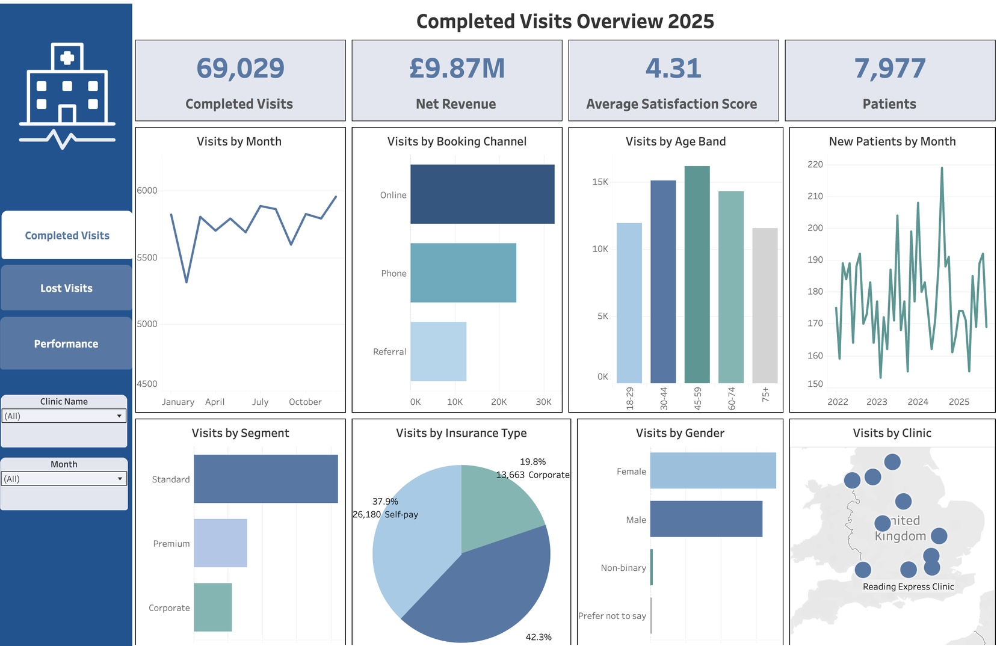
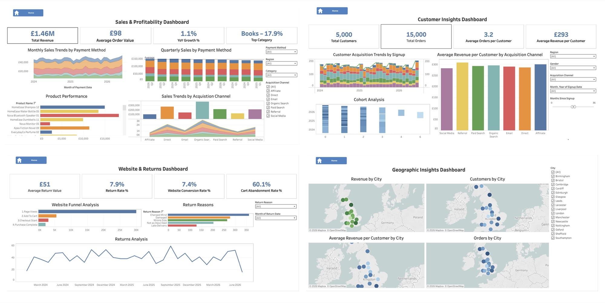
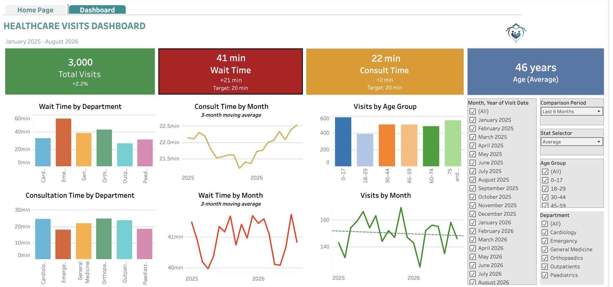

About Me
I am a data analyst skilled in using SQL (PostgreSQL), Tableau and Excel to turn thoroughly validated data into information that people can trust and act on.
Each analysis starts with a business problem; where Excel is used, the main figures are first worked out with formulas, followed by data quality and validation checks and any necessary cleaning. Business questions are then answered in SQL and the results presented in a Tableau dashboard, before a final stage of insights, deductions and recommendations, with measures and tools varying by project.
The same approach can be used in healthcare, retail or any other field, depending on the questions that need answering.
Skills
- Core Competencies
- Data cleaning, Data quality and validation, Exploratory data analysis (EDA), Data visualisation and storytelling
- Professional Strengths
- Teamwork, Communication, Attention to detail and Problem solving
Tech Stack
SQL (PostgreSQL)
Joins, CTEs, window functions, percentiles, views, cohort analysis and data validation checks.
Tableau
Multi-page dashboards, parameters, calculated fields, adjustable targets and KPI tiles, published on Tableau Public.
Microsoft Excel
Formula-based workbooks, summary tables, moving averages, conditional formatting, charts and what-if scenarios.
GitHub
Publishing and version-controlling my project work, with a written report for each project.
Projects
My portfolio currently consists of three (3) projects, with each taking a business question from raw data to recommendations. They cover healthcare and retail, with 80,000 clinic appointments measured against targets, 3,000 hospital visits analysed to reduce long waits and 15,000 online orders examined for growth opportunities.
Each project includes data checks, answers to the questions in SQL, a Tableau dashboard and a report of findings and next steps. The two healthcare projects also include Microsoft Excel workbooks. All three projects use synthetic data created for portfolio purposes, so the results show my way of working and do not describe a real organisation.
SQL · Tableau · Excel · 2026
Hospital Operations 2025
How well are the hospital group's clinics meeting their 2025 targets, and where are the biggest opportunities to do better?

Open the live dashboard
- Net revenue against target
- 88.9%
- Bookings lost
- 13.7%
- Clinician time used (target about 82%)
- 56.6%
Process
Modelled recoverable revenue in Excel, validated 80,000 appointments with nine data checks, answered nine business questions in SQL and built a three-page dashboard.
Key Findings
A £1.24M revenue gap, with every clinic and month below its revenue target. Online bookings (15.5% lost) and long waits lose the most. The lost rate rises from 12.3% for waits under 5 days to 17.2% for waits of 25 to 29 days.
Recommendations
Start with online bookings by adding reminders, confirmation and easy rescheduling. Cutting lost visits helps but would not close the gap alone.
Full report, SQL and data on GitHub
Tableau dashboard
SQL · Tableau · 2026
UK E-Commerce Analytics
How are sales, customers, returns and website conversion performing, and where does the retailer have the most room to improve?

Open the live dashboard
- Revenue, flat at +1.1% YoY in 2025
- £1.46M
- Cart abandonment
- 60.1%
- Share of revenue from the top 16% of customers who ordered
- 30%
Process
Checked 8 linked tables covering 15,000 orders, 5,000 customers and 30,000 web sessions, then used joins, CTEs, window functions and cohort analysis.
Key Findings
221 cancelled orders still marked as Paid (£20,799), and £197,544 of orders stuck in Shipped or Processing for over 90 days.
Recommendations
Grow basket size, prompt repeat purchases, simplify checkout and reduce returns, trying changes on a share of shoppers first where possible.
Full report, SQL and data on GitHub
Tableau dashboard
SQL · Tableau · Excel · 2026
Healthcare Visits Analytics
How can the hospital reduce long patient waits, and where should managers act first?

Open the live dashboard
- Average wait (target 20 minutes)
- 41 min
- Average wait in Emergency
- 55.4 min
- Change in visits, last 6 months
- +2.2%
Process
Analysed 3,000 visits across six departments. Fixed conflicting Paediatrics and age records by backup, fix and verification, keeping every visit.
Key Findings
All six departments miss the wait target while demand is stable. Emergency has the shortest consultations but the longest waits, which points to patient flow.
Recommendations
Prioritise how patients move through Emergency, set staged department targets and report the longest waits, not just the average.
Full report, SQL and data on GitHub
Tableau dashboard